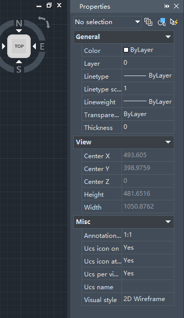
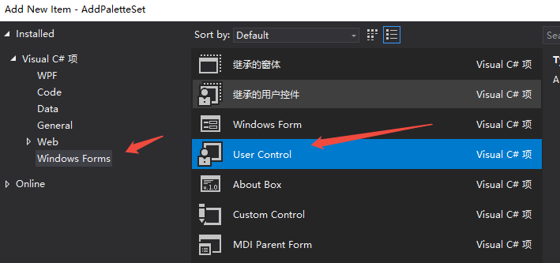
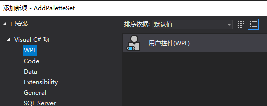
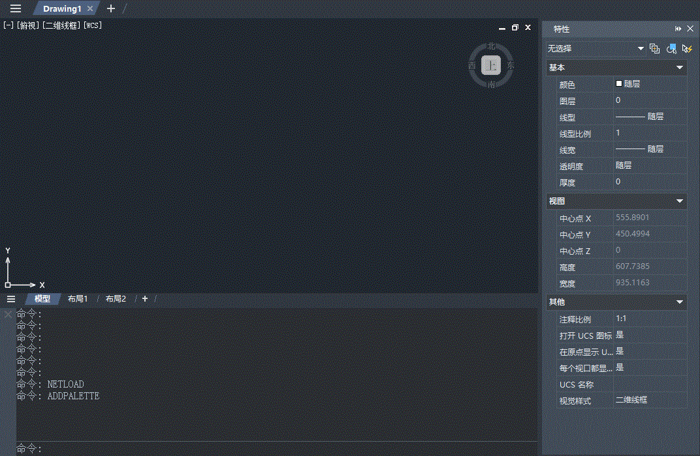

Panels that display various data and settings in dialog forms can be inconvenient for operations, such as being unable to view real-time data changes while interacting with the drawing space. By using dockable panels, these panels can be anchored to the CAD interface, allowing users to monitor data updates while working in the drawing space.
Classic dockable panels include the Properties panel, etc.

Prerequisites
Add the following namespace to your project code first:
using ZwSoft.ZwCAD.Windows;
Then create a private PaletteSet member variable in your implementation class:
private PaletteSet m_paletteSet;
Winform Dockable Panel
Create a Winform Control
Add a new item to the project and create a User Control under Winform.

Add Winform Control to the PaletteSet
After designing the Winform interface, use the Add method of PaletteSet to integrate the control:
m_paletteSet = new PaletteSet("My PaletteSet");
// Add winform control to the panel
MyUserControl ctl = new MyUserControl();
m_paletteSet.Add("Winform control", ctl);
Wpf Dockable Panel
Wpf has a more modern UI interface and supports complex interactions, making it increasingly popular for interface development.
Create a Wpf Control
Add a new item to the project and create a User Control under Wpf.

Add Wpf Control to the PaletteSet
Use the AddVisual method of PaletteSet to integrate the control:
// Add wpf control to the panel
MyWpfControl wpfCtl = new MyWpfControl();
m_paletteSet.AddVisual("Wpf control", wpfCtl);
Set Panel Dock Position
By default, the panel is floating. To dock it to a specific side, set the Dock property. Use DockEnabled to specify allowed docking directions.
// Set docking position
m_paletteSet.Dock = DockSides.Left;
// Set allowed docking directions
m_paletteSet.DockEnabled = DockSides.Left | DockSides.Right;
// Display the panel
m_paletteSet.Visible = true;
Implementation Result

Sample Code
Refer to the .NET sample project: ZwDotNetGuide/AddPaletteSet